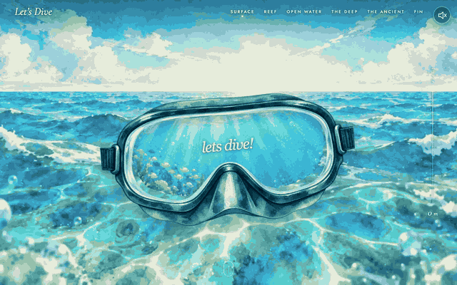
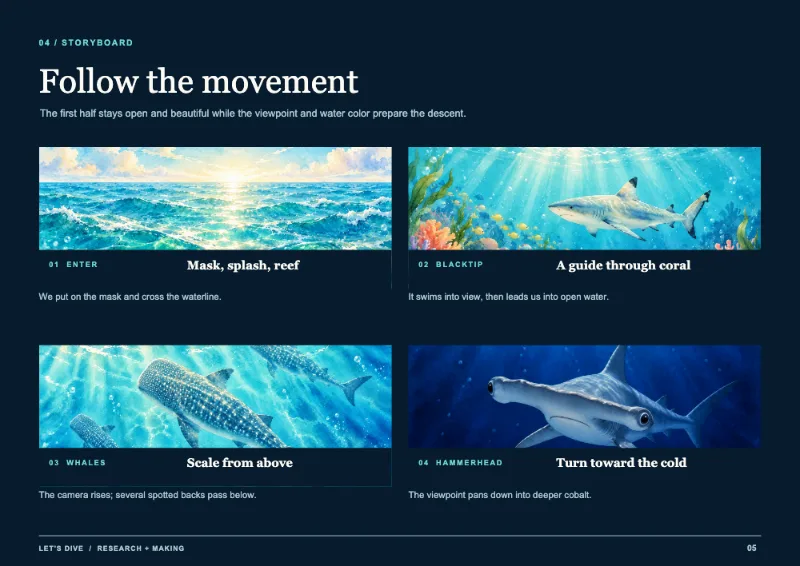
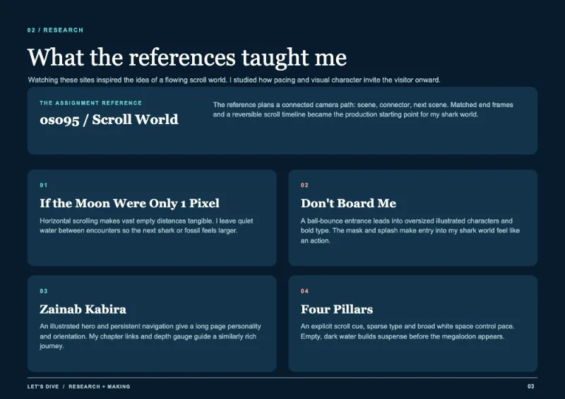
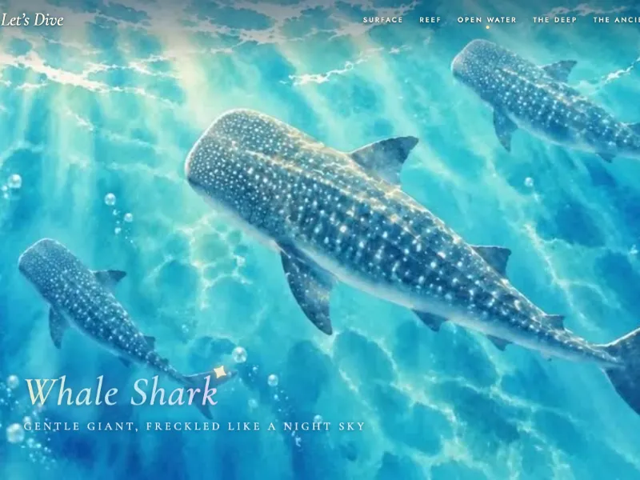
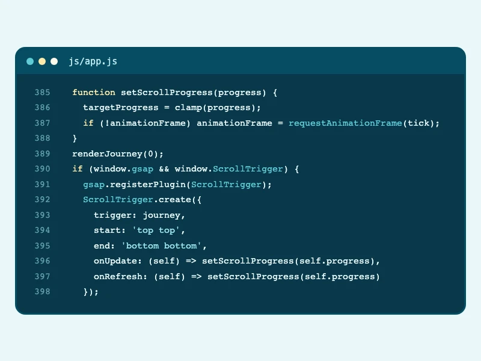
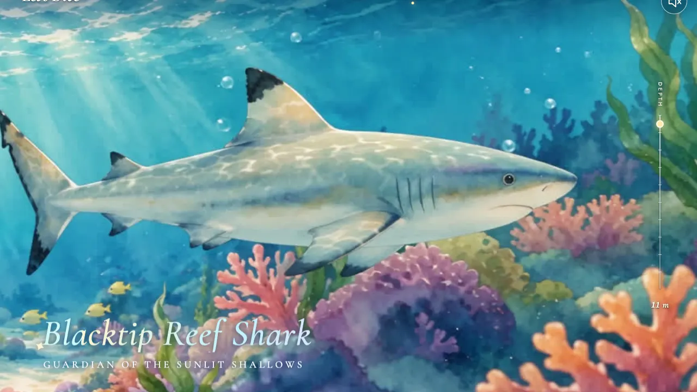

Web development · Scrollytelling · 2026
Let's Dive
A scroll-driven watercolor journey from a sunlit reef into the deep ocean.

- Role
- Concept, art direction & front-end development
- Tools
- HTML, CSS, JavaScript, GSAP ScrollTrigger
- Duration
- 1 week
- Team
- Solo, CODEX
01 Problem
The assignment was to build a scroll world: a website that tells a story as you scroll. I set myself the challenge of telling a shark story with almost no words, so visitors feel the dive from a friendly reef into scary, dark water.
02 Process
-

Storyboard
I planned the dive shot by shot, from the mask at the surface to the fossil in the dark, so every scroll position had a clear picture.
-

Research
I studied other scroll-driven sites to learn how a continuous camera path keeps a visitor moving forward.
-

Art and frames
I art-directed the watercolor scenes, made with AI image and video tools, and exported the clips as JPEG frames.
-

Scroll code
GSAP ScrollTrigger reports how far you have scrolled, and each frame is painted on a canvas so scrolling back is as smooth as scrolling down.
03 Outcome
The finished site plays a dive you control by scrolling down and back up, with an entry gate, chapter links, a depth gauge and sound that is off until you choose it. I learned how to keep scroll animation smooth by painting frames on a canvas, and I would still fine-tune the pacing of the deeper scenes.
